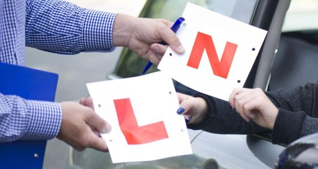
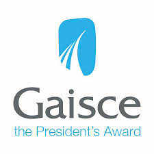

I am Quick learner when comes to learning new things,i am also very Reliable to work with ,along with being Punctual and Friendly person.I enjoy going out into the world and meeting new people. I can speak German and Irish fluently as i completed them to Leaving Cert Higher Level.In fourth year I had the opertunity to visit Berlin with classmates as part of a German exchange whereby we each had our own exchange partner who we stayed with for a weeks to better our landuage skills.
I have chosen BIS for many reason , but one of the prominant reason in why i have decided to go down this route began in fourth year, When a speaker came to our school to inform us of what the course intails. It seemed to fit my abilities perfectly as i always had a natural ability for problem solving along with an interest in technoly and the way it changes the runnings of businesses. Another aspect to the degree is the variability to the jobs available to me and the money being earned.
I have received six principle awards for hard work and pleasant manner. I achieved 456 points in the leaving cert in 2017 out of a possible 625 points. I passed my driving test in April 2016 at the age of 17.In secondary school I received a bronze Gaisce president’s award in 2015 volunteered with a program called fast friends where we helped teenagers with learning disabilities I have won three Sciath na Scol finals with St.John National Girls School, two Munster and county football final with my secondary school in 2013 and 2014 and i have won all Ireland medal with county football team in 2014
 Personal email address: rmurray@gmail.com
Business email address: 117476974@umail.ucc.ie
Social media: facebook:roisinmurr / twitter:roisinm123
DOB: 13.08.98